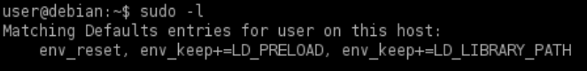

Shared Libraries: environment variables
Linux programs coomonly use dynamically linked shared object libraries.
Libraries contain compiled code or other data that developers use to avoid having to re-write the same pieces of code across multiple programs.
Two types of libraries exist in Linux:
• static libraries (denoted by the .a file extension)
◇ When a program is compiled, static libraries become part of the program and can not be altered.
• dynamically linked shared object libraries (denoted by the .so file extension).
◇ When a program is compiled, dynamic libraries can be modified to control the execution of the program that calls them.
◇ There are multiple methods for specifying the location of dynamic libraries, so the system will know where to look for them on program execution.
▪ -rpath or -rpath-link flags when compiling a program, using the environmental variables LD_RUN_PATH or LD_LIBRARY_PATH, placing libraries in the /lib or /usr/lib default directories, or specifying another directory containing the libraries within the /etc/ld.so.conf configuration file.
Programs run through sudo can inherit the environment variables from the user’s environment.
In the /etc/sudoers config file,
◇ if the
env_reset option is set, sudo will run programs in a new, minimal environment.
◇ The
env_keep option can be used to keep certain environment variables from the user’s environment.
The configured options are displayed when running sudo -l
